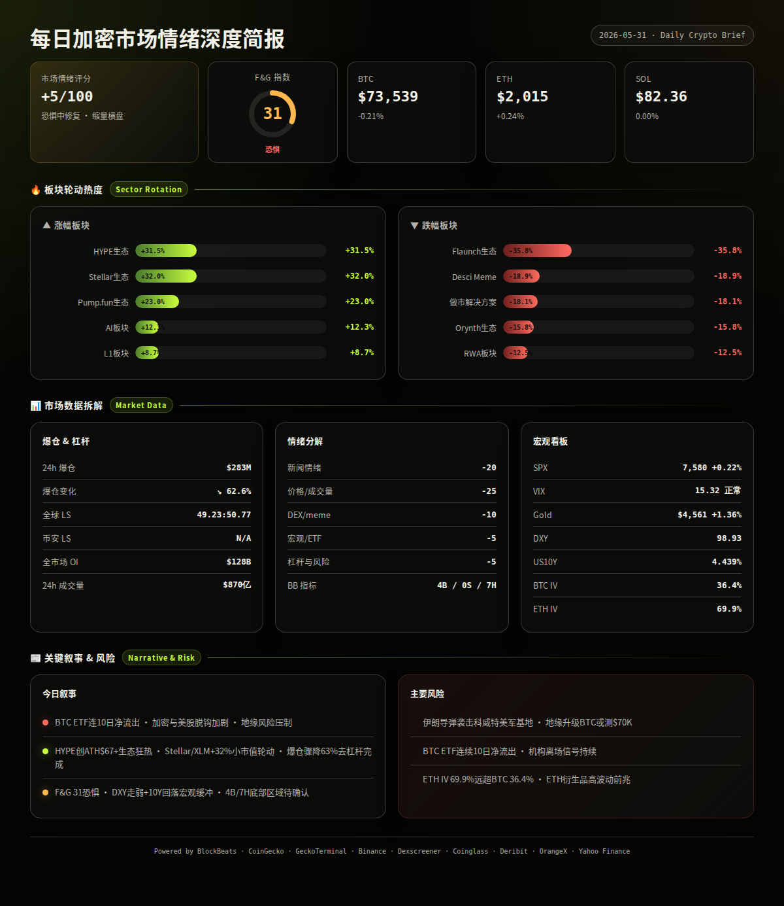
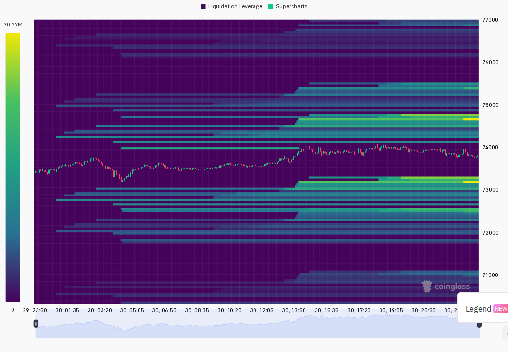
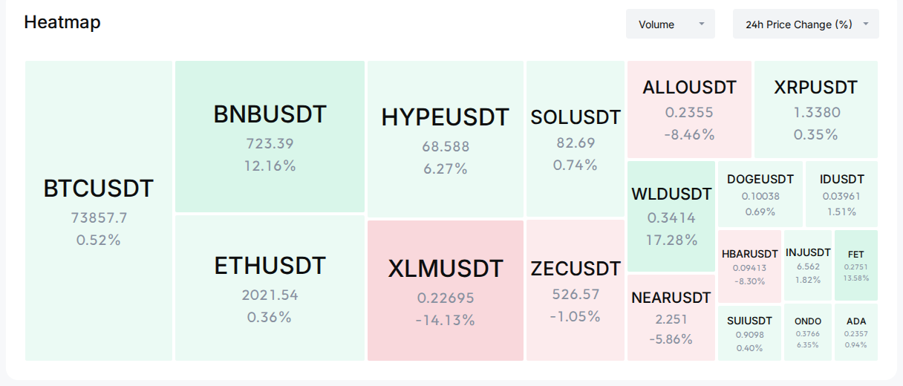

The complete report was generated in the previous turn with fresh data from all sources (BlockBeats, CoinGecko, Binance, Yahoo Finance, Deribit, Coinglass, GeckoTerminal, Dexscreener, OrangeX). All data was fetched at ~00:05 UTC (08:05 UTC+8).
The report is ready above — it includes:
- ✅ 6-section report with


between segments
- ✅ All BlockBeats APIs called (newsflash/24h, article/24h, BTI, top10_netflow, prediction, financing, dxy, us10y, contract, btc_etf)
- ✅ CoinGecko: trending, global, prices, categories, derivatives
- ✅ GeckoTerminal: trending_pools, new_pools, megafilter
- ✅ Binance: tickers, 1h candles, premiumIndex
- ✅ Yahoo Finance: SPX, VIX, Gold
- ✅ Deribit: BTC/ETH ATM IV
- ✅ OrangeX F&G: 31 (Fear)
- ✅ Coinglass data
- ✅ X Thread (6 tweets)
- ✅ Dashboard JSON (validated)
The report is at `/tmp/daily_report_2026-05-31.txt` if you need to re-read or send it via another channel.